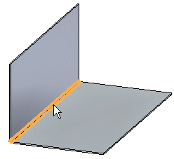
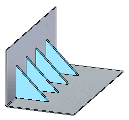
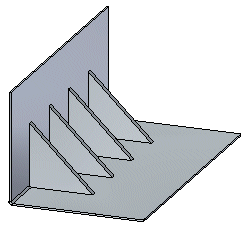
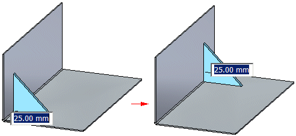

Construct a gusset
In the ordered environment, gussets can be constructed automatically or from a user-drawn profile.
Construct a gusset automatically in the ordered environment
-
Choose Home tab→Sheet metal group→Dimple list→Gusset.

-
Click the bend along which you want to place the gusset.
-
Do one of the following:
-
Position a single gusset and click to place the gusset.
-
Use the command bar options to specify a pattern of gussets.
-
-
On the command bar, click Finish.
Construct a gusset from a user-drawn profile in the ordered environment
-
Choose Home tab→Sheet metal group→Dimple list→Gusset
-
On the command bar, click the Gusset Options button.
-
On the Gusset Options dialog box, click the User-Drawn Profile option.
-
Define the profile plane.
Note:Instead of drawing a profile, you can also select a previously drawn sketch to use to create the gusset.
-
Draw the profile for the gusset.
-
Choose Home tab→Close group→Close to close the profile view.

-
Click to specify a direction for the gusset.
-
On the command bar click Finish.
Click the Gusset Options button on the command bar to display the Gusset Options dialog box, which allows you to specify such things as the shape, width, and rounding for the gusset.
Construct a gusset in the synchronous environment
-
Choose Home tab→Sheet metal group→Dimple list→Gusset
. -
Click the bend along which you want to place the gusset.

-
Use the command bar options to specify a pattern of gussets.

-
Click to place the gusset(s).

-
The Gusset Options button on the command bar displays the Gusset Options dialog box so you can specify such things as the shape, width, and rounding for the gusset.
-
You can press T to bind the dimension to the opposite end of the bend.

How do I
Edit a gussetLearn more
Constructing gussetsLook up more details
Gusset commandGusset command bar
Gusset command bar
Gusset Options dialog box